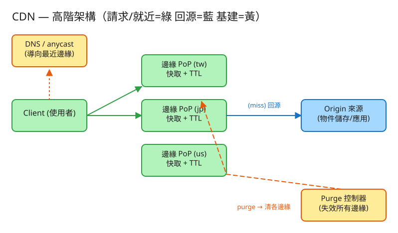

H 基礎設施 看故事就懂 輕鬆讀 25 分鐘
你在台灣打開一個網站，網站的圖片和影片其實放在美國的伺服器。如果每次都從美國拉過來， 訊號要漂洋過海、繞地球半圈，又慢又卡。
CDN（內容傳遞網路）做的事就是：事先把這些檔案複製一份，放到離你最近的機房（例如台北就有一台）。 你要圖片時，從台北那台直接拿，又快又不打擾遠在美國的「總部」。
很多人第一次看這題會想：「不就是把檔案多複製幾份放各地嗎？」——這想法漏掉了兩個會把系統搞砸的真正難關。
CDN 的第一個難關就是 ①：總部的內容更新了（圖片改了、程式換新版）， 但各地便利商店架上還是舊的——怎麼讓它們「換掉舊貨」？這叫快取失效（purge）。
第二個難關是 ②：某個熱門檔案剛好同時過期，那一瞬間全球的便利商店都發現「架上沒貨了」， 同時衝去總倉庫叫貨，把總倉庫打爆。這叫回源洪峰（cache stampede）。
💭 停一下：為什麼「每次都直接從美國總部拿」這麼簡單的做法不行？
別被「系統」嚇到。整件事其實就是闖 4 關，一關一關來：
你要拿檔案，系統得先把你導到最近的便利商店（邊緣節點），而不是大老遠的總倉庫。
到了最近的店，問一句：「架上有沒有我要的東西？」
架上的貨不能放到天荒地老。每樣東西都有一個保鮮期（TTL），這是總倉庫決定的： 圖片之類不太會變的，保鮮期很長（放一天）；常變的設定檔，保鮮期很短（放 10 秒就要重新叫貨）。
總部突然改了內容（圖片換了、程式修了 bug）。但各地店裡架上還是舊的、而且保鮮期還沒到， 怎麼辦？總部發一道命令：「所有分店，把這個商品從架上拿掉！」這就是 purge（失效）。
工程上的「取捨」聽起來很抽象。換個方式記：這個系統最怕三件事，每個設計都是為了避開某個「怕」。

✏️ 用 Excalidraw 開啟編輯（diagram.excalidraw）白話導讀：
看完上面，這些詞你其實都已經懂了，這裡只是把「工程術語 ↔ 白話」對起來，Part 2 會用到：
| 工程術語 | 白話解釋 |
|---|---|
| CDN | 遍布全球的便利商店網，把內容放到離你最近的地方 |
| 邊緣節點 / PoP | 離使用者近的「巷口便利商店」（一個機房） |
| Origin（來源） | 真正的貨源「總倉庫」，只在沒貨時被叫貨 |
| 命中 (hit) | 店裡架上有 → 直接拿，超快 |
| 未命中 (miss) | 架上沒有 → 店員去總倉庫叫貨（你要等） |
| 回源 (origin fetch) | 邊緣去總倉庫「叫貨」的動作 |
| TTL（保鮮期） | 架上的貨放多久要當過期、重新叫貨（總倉庫決定） |
| Cache-Control | 總倉庫貼在貨上的「保鮮期標籤」 |
| purge（失效） | 總部下令全國分店「立刻下架」這個東西 |
| 版本化 URL | 新內容直接換個新名字，舊的不用下架 |
| 命中率 | 100 次裡有幾次「架上就有」（越高越省、越快） |
| 回源比 | 有多少比例的請求得「去總倉庫叫貨」（越低越好） |
| 回源洪峰 / cache stampede | 熱門貨同時過期，全國同時叫貨打爆總倉庫 |
| 叫貨合併 / single-flight | 同一個東西只派一個人去叫，大家一起用 |
| anycast / GeoDNS | 自動把你導到「最近的那家店」的機制 |
| 一致性雜湊 | 決定「哪個貨放哪家店」的聰明分配法，加減分店時擾動最小 |
| push vs pull CDN | pull＝有人問才叫貨；push＝開賣前先鋪好貨 |
我們估幾個關鍵數字（數字不必背，重點是感受它的「形狀」）：
| 估什麼 | 大概數字 | 所以呢？ |
|---|---|---|
| 每天多少次請求 | ~100 億次（每秒十幾萬筆） | 不可能全打總倉庫 → 要靠就近的邊緣吸收 |
| 命中率（架上就有的比例） | 目標 95% 以上 | 只剩 5% 要叫貨 → 總倉庫壓力小 20 倍 |
| 頻寬省多少 | 命中 95% → 總倉庫出貨量降到 1/20 | 這就是 CDN 最值錢的地方 |
💭 停一下：為什麼命中率從 90% 升到 95%，省的不只是「5%」？
① 拿檔案（最常用，就是一般 GET）
GET https://cdn.example.com/app.js
我回：檔案內容 + 一張標籤「X-Cache: HIT 或 MISS」（告訴你是不是架上就有）
還有「Cache-Control: max-age=3600」（這東西的保鮮期是 3600 秒）② 下架（管理用）
POST /admin/purge 給我：{ 要下架哪個檔案 }
→ 命令所有分店把它從架上清掉，下次有人要就重新叫貨（拿到新版）③ 看營運數字
GET /admin/stats
我回：{ 命中率, 回源比, 各區域分別多少 }注意第 ① 張的「保鮮期是總倉庫貼的」——快取多久不是分店自己決定，是內容擁有者（origin）說了算。
每件貨一列：檔案路徑、內容、保鮮期 TTL。保鮮期就是貼在貨上的標籤，分店叫貨時會一起拿到。
每個分店一本，記架上現在有哪些貨、各自的「到期時間」：檔案、內容、expires_at（什麼時候過期）。
來客人時就翻這本：有且沒過期 → 命中；否則 → 叫貨。
每個區域記命中幾次、沒命中幾次，就能算出命中率和回源比，知道哪家分店表現好不好。
| 哪裡會塞車 | 怎麼拓寬 |
|---|---|
| 熱門貨同時過期 → 全國同時叫貨打爆總倉庫 | 叫貨合併：同一個東西只派一個人去叫；還能「先給舊的、背景偷偷換新」 |
| 某個爆紅檔案把單一分店擠爆 | 分店裡放多份 + 用一致性雜湊把熱門貨分散到多台機器；中間再加一層「區域倉庫」 |
| 下架命令要送到全球所有分店，慢又可能漏 | 盡量改用版本化命名（換新名字就不用下架）；真要下架就用可靠廣播 + 對帳 |
| 加減分店時快取大規模失效 | 用一致性雜湊，只搬相鄰一小段 |
| 命中率太低（架上老是沒貨） | 把「同一個東西」正規化成同一個格子別存成好幾份、保鮮期設合理、加區域中間層吸長尾 |
「Part 1 的三個怕」是核心取捨。這裡補幾個常被面試官追問的：
讀十遍不如玩一遍。這題有一個真的可以跑的小程式，讓你親眼看到 hit/miss/回源/purge：
# 啟動（在這題的 demo 資料夾裡）
cd demo
php -S localhost:8051 -t public
# 然後瀏覽器打開 http://localhost:8051玩過 demo 了，來掀開引擎蓋看看「那幾關到底是哪幾段程式做的」。 好消息：核心只有三個小檔，剛好對應前面講的工作。不用會 PHP，我把程式翻成白話、只留關鍵那幾行，看註解就懂。
這是全題的心臟。一個請求進來，先就近選店，再問「架上有沒有、過期沒」：
function 拿資產(資產, 區域) {
店 = 依「區域」選最近的那家 // ← 就近路由
架上 = 店的快取[資產]
if (架上存在 且 還沒過期) {
記一筆 命中(hit)
return 直接從架上給 // ← HIT！超快
}
// 架上沒有 / 過期了 → 叫貨
貨 = 總倉庫.叫貨(資產) // ← 回源（昂貴、慢）
保鮮期 = 貨帶的 Cache-Control TTL
店的快取[資產] = { 內容:貨, 到期時間: 現在 + 保鮮期 } // ← 放上架，記到期日
記一筆 未命中(miss)
return 從剛叫到的貨給
}「存在且沒過期 → HIT；否則叫貨 → MISS」這短短幾行就是 CDN 的核心。注意叫貨後順手放上架並記下到期時間，下一個人就能 HIT。
內容更新時，要把所有分店架上的舊版本清掉：
function 下架(資產) {
for (每一家分店) {
if (這家架上有 資產)
從架上拿掉(資產) // ← 清掉舊版本
}
// 之後任何人來要，都會「架上沒有 → 叫貨」拿到新版
}下架不是去「換成新的」，而是直接拿掉。拿掉後下一次請求自然 MISS → 叫貨，拿到的就是總倉庫的最新版——簡單又可靠。
如果一個區域有好幾台機器，要決定某個資產歸哪一台。最笨的做法是「編號 ÷ 機器數 取餘數」， 但機器一加減，餘數全變、貨全部要搬家。一致性雜湊用一個「環」來避免這件事：
function 找節點(資產) {
h = 把資產雜湊成環上的一個座標
// 在環上「順時針」找第一個機器點
return 第一個 >= h 的機器（繞一圈回到開頭也算）
}妙處在於：加一台機器，只有它「身後相鄰那一小段」的貨要搬，其他全不動。 比起「取餘數」會全部大風吹，這讓加減節點時的快取擾動降到最小。demo 還給每台機器在環上放很多個虛擬點，讓貨分得更平均。
| 關卡（前面講的） | 哪個檔 | 關鍵那段 |
|---|---|---|
| ① 就近導到最近的店 | Cdn | 拿資產() 開頭的「依區域選店」 |
| ② 命中或回源 | Cdn | 拿資產() 的 hit/叫貨 if |
| ③ 保鮮期 TTL | Cdn + Origin | 放上架時記的「到期時間」 |
| ④ 下架 | Cdn | 下架() 清各分店 |
| （哪個貨歸哪家店） | HashRing | 找節點() 環上順時針找 |
👉 重點：真實系統會把「JSON 檔 + flock」換成「各 PoP 的本地快取（Varnish/nginx）+ 物件儲存 + anycast」， 但上面這幾段判斷邏輯一字都不用改。所以讀懂這個小 demo，你就讀懂了這題的核心。
先不要看答案，自己用講給朋友聽的方式回答看看（講得出來才是真的懂）：
CDN = 遍布全球的便利商店，把內容放到離你最近的地方。
4 個關卡：① 就近導到最近的店 → ② 架上有就拿（hit）、沒有就叫貨（miss 回源、順手放上架）→ ③ 每件貨有保鮮期（TTL） → ④ 總部出新版就下架舊的（purge）。
3 個怕：怕給過期舊貨（purge + 版本化 + 合理 TTL）、怕擠爆總倉庫（叫貨合併）、怕慢/沒就近（anycast + 高命中率）。
工程細節一句話：一切看命中率 → 用 hit/miss + TTL 管快取、用 purge 或版本化做失效、用一致性雜湊分配資產不亂、用叫貨合併擋回源洪峰。
想看更精簡、面試速查用的版本？👉 前往完整版（同樣內容的工程速查格式）。